Lecciones de circuitos eléctricos - Volumen I
Capítulo 1
CONCEPTOS BÁSICOS DE ELECTRICIDAD
- Static electricity
- Conductors, insulators, and electron flow
- Electric circuits
- Voltage and current
- Resistance
- Voltage and current in a practical circuit
- Conventional versus electron flow
- Contributors
Static electricity
Hace siglos se descubrió que ciertos tipos de materiales se atraen misteriosamente entre sí después de frotarlos. Por ejemplo: después de frotar un trozo de seda contra un trozo de vidrio, la seda y el vidrio tenderían a pegarse. De hecho, había una fuerza de atracción que podía demostrarse incluso cuando los dos materiales estaban separados:
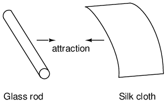
El vidrio y la seda no son los únicos materiales que se comportan así. Cualquiera que alguna vez haya rozado un globo de látex y haya descubierto que intenta pegarse a él, ha experimentado el mismo fenómeno. La cera de parafina y la tela de lana son otro par de materiales que los primeros experimentadores reconocieron que manifestaban fuerzas de atracción después de frotarse entre sí:
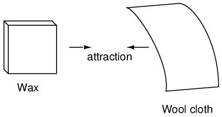
Este fenómeno se volvió aún más interesante cuando se descubrió que materiales idénticos, después de haber sido frotados con sus respectivos paños, siempre se repelían entre sí:
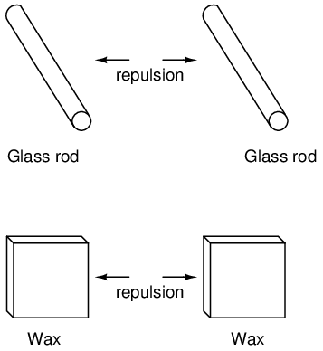
También se observó que cuando un trozo de vidrio frotado con seda se exponía a un trozo de cera frotado con lana, los dos materiales se atraerían entre sí:
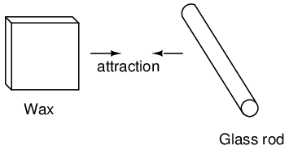
Además, se descubrió que cualquier material que demostrara propiedades de atracción o repulsión después de ser frotado podía clasificarse en una de dos categorías distintas: atraído por el vidrio y repelido por la cera, o repelido por el vidrio y atraído por la cera. Era lo uno o lo otro: no se encontraron materiales que fueran atraídos o repelidos tanto por el vidrio como por la cera, o que reaccionaran con uno sin reaccionar con el otro.
Se prestó más atención a los trozos de tela utilizados para frotar. Se descubrió que después de frotar dos trozos de vidrio con dos trozos de tela de seda, no sólo los trozos de vidrio se repelían entre sí, sino que también lo hacían las telas. El mismo fenómeno se produjo con los trozos de lana utilizados para frotar la cera:
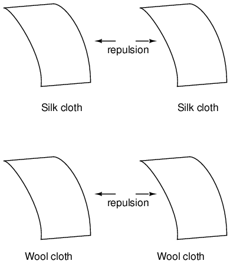
Ahora, esto fue realmente extraño de presenciar. Después de todo, ninguno de estos objetos fue visiblemente alterado por el roce, pero definitivamente se comportaron de manera diferente que antes de ser frotados. Cualquier cambio que se produjera para que estos materiales se atrajeran o repelieran entre sí fue invisible.
Algunos experimentadores especularon que se transferían "fluidos" invisibles de un objeto a otro durante el proceso de frotamiento, y que estos "fluidos" podían ejercer una fuerza física a distancia. Charles Dufay fue uno de los primeros experimentadores que demostró que definitivamente se producían dos tipos diferentes de cambios al frotar ciertos pares de objetos. El hecho de que hubo más de un tipo de cambio manifestado en estos materiales fue evidente por el hecho de que se produjeron dos tipos de fuerzas:atracción and repulsión. La hipotética transferencia de fluido se conoció comocargar.
Un investigador pionero, Benjamín Franklin, llegó a la conclusión de que sólo se intercambiaba un fluido entre los objetos frotados y que las dos "cargas" diferentes no eran más que un exceso o una deficiencia de ese fluido. Después de experimentar con cera y lana, Franklin sugirió que la lana gruesa eliminaba parte de este fluido invisible de la cera suave, provocando un exceso de fluido en la lana y una deficiencia de fluido en la cera. La disparidad resultante en el contenido de líquido entre la lana y la cera causaría una fuerza de atracción, ya que el fluido intentaría recuperar su equilibrio anterior entre los dos materiales.
Postular la existencia de un único "fluido" que se ganaba o se perdía mediante el frotamiento explicaba mejor el comportamiento observado: que todos estos materiales caían claramente en una de dos categorías cuando se frotaban y, lo más importante, que los dos materiales activos se frotaban entre sí.siempre caía en categorías opuestascomo lo demuestra su invariable atracción mutua. En otras palabras, nunca hubo un momento en el que dos materiales se frotaran entre sí.ambosse volvió positivo o negativo.
Siguiendo la especulación de Franklin sobre la lana frotando algo de la cera, el tipo de carga asociada con la cera frotada se conoció como "negativa" (porque se suponía que tenía una deficiencia de líquido), mientras que el tipo de carga asociada con la lana frotada se conoció como "positiva" (porque se suponía que tenía un exceso de líquido). ¡No sabía que su inocente conjetura causaría mucha confusión entre los estudiantes de electricidad en el futuro!
El físico francés Charles Coulomb llevó a cabo mediciones precisas de la carga eléctrica en la década de 1780 utilizando un dispositivo llamadoequilibrio torsionalmedir la fuerza generada entre dos objetos cargados eléctricamente. Los resultados del trabajo de Coulomb condujeron al desarrollo de una unidad de carga eléctrica denominada en su honor, laculombio. Si dos objetos "puntuales" (objetos hipotéticos que no tienen una superficie apreciable) se cargaran igualmente en una medida de 1 culombio y se colocaran a 1 metro (aproximadamente 1 yarda) de distancia, generarían una fuerza de aproximadamente 9 mil millones de newtons (aproximadamente 2 mil millones de libras), ya sea atrayendo o repeliendo dependiendo de los tipos de cargas involucradas. Se encontró que la definición operativa de culombio como unidad de carga eléctrica (en términos de fuerza generada entre cargas puntuales) era igual a un exceso o deficiencia de aproximadamente 6.250.000.000.000.000.000 de electrones. O, expresado en términos inversos, un electrón tiene una carga de aproximadamente 0,00000000000000000016 culombios. Siendo que un electrón es el portador de carga eléctrica más pequeño conocido, esta última cifra de carga del electrón se define como lacarga elemental.
Mucho más tarde se descubrió que este "fluido" en realidad estaba compuesto de partículas extremadamente pequeñas de materia llamadaselectrones, llamado así en honor a la antigua palabra griega que significa ámbar: otro material que exhibe propiedades cargadas cuando se frota con un paño. Desde entonces, la experimentación ha revelado que todos los objetos están compuestos de "bloques de construcción" extremadamente pequeños conocidos comoátomos, y que estos átomos están a su vez compuestos de componentes más pequeños conocidos comopartículas. Las tres partículas fundamentales que componen la mayoría de los átomos se llamanprotones, neutrones and electrones. Si bien la mayoría de los átomos tienen una combinación de protones, neutrones y electrones, no todos los átomos tienen neutrones; un ejemplo es el isótopo de protio (1H1) de hidrógeno (Hidrógeno-1), que es la forma más ligera y común de hidrógeno que solo tiene un protón y un electrón. Los átomos son demasiado pequeños para ser vistos, pero si pudiéramos mirar uno, podría verse así:

Aunque cada átomo en una pieza de material tiende a mantenerse unido como una unidad, en realidad hay mucho espacio vacío entre los electrones y el grupo de protones y neutrones que residen en el medio.
Este modelo crudo es el del elemento carbono, con seis protones, seis neutrones y seis electrones. En cualquier átomo, los protones y los neutrones están muy estrechamente unidos, lo cual es una cualidad importante. El grupo fuertemente unido de protones y neutrones en el centro del átomo se llamanúcleo, y el número de protones en el núcleo de un átomo determina su identidad elemental: cambia el número de protones en el núcleo de un átomo y cambias el tipo de átomo que es. De hecho, si pudieras extraer tres protones del núcleo de un átomo de plomo, ¡habrías realizado el sueño de los viejos alquimistas de producir un átomo de oro! La estrecha unión de los protones en el núcleo es responsable de la identidad estable de los elementos químicos y del fracaso de los alquimistas en lograr su sueño.
Los neutrones influyen mucho menos en el carácter químico y la identidad de un átomo que los protones, aunque son igualmente difíciles de añadir o eliminar del núcleo, ya que están tan estrechamente unidos. Si se añaden o ganan neutrones, el átomo seguirá conservando la misma identidad química, pero su masa cambiará ligeramente y puede adquirir formas extrañas.nuclearpropiedades como la radioactividad.
Sin embargo, los electrones tienen mucha más libertad para moverse en un átomo que los protones o los neutrones. De hecho, pueden ser expulsados de sus respectivas posiciones (¡incluso abandonando el átomo por completo!) con mucha menos energía de la que se necesita para desalojar partículas en el núcleo. Si esto sucede, el átomo aún conserva su identidad química, pero se produce un desequilibrio importante. Los electrones y los protones se caracterizan por el hecho de que se atraen entre sí a distancia. Es esta atracción a través de la distancia la que causa la atracción entre objetos frotados, donde los electrones se alejan de sus átomos originales para residir alrededor de los átomos de otro objeto.
Los electrones tienden a repeler a otros electrones a distancia, al igual que los protones con otros protones. La única razón por la que los protones se unen en el núcleo de un átomo es por una fuerza mucho más fuerte llamadafuerza nuclear fuerteque sólo tiene efecto en distancias muy cortas. Debido a este comportamiento de atracción/repulsión entre partículas individuales, se dice que los electrones y los protones tienen cargas eléctricas opuestas. Es decir, cada electrón tiene una carga negativa y cada protón una carga positiva. En números iguales dentro de un átomo, contrarrestan la presencia de cada uno de modo que la carga neta dentro del átomo es cero. Por eso la imagen de un átomo de carbono tenía seis electrones: para equilibrar la carga eléctrica de los seis protones en el núcleo. Si los electrones salen o llegan electrones adicionales, la carga eléctrica neta del átomo se desequilibrará, dejando al átomo "cargado" como un todo, lo que hará que interactúe con partículas cargadas y otros átomos cargados cercanos. Los neutrones no son atraídos ni repelidos por electrones, protones o incluso otros neutrones y, en consecuencia, se clasifican como sin carga alguna.
El proceso de llegada o salida de electrones es exactamente lo que sucede cuando ciertas combinaciones de materiales se frotan entre sí: el rozamiento obliga a los electrones de los átomos de un material a abandonar sus respectivos átomos y transferirse a los átomos del otro material. En otras palabras, los electrones constituyen el "fluido" propuesto por Benjamín Franklin.
El resultado de un desequilibrio de este "fluido" (electrones) entre objetos se llamaelectricidad estática. Se llama "estático" porque los electrones desplazados tienden a permanecer estacionarios después de ser movidos de un material aislante a otro. En el caso de la cera y la lana, se determinó mediante experimentación adicional que los electrones de la lana en realidad se transfirieron a los átomos de la cera, ¡lo cual es exactamente lo opuesto a la conjetura de Franklin! En honor a la designación de Franklin de que la carga de la cera era "negativa" y la carga de la lana era "positiva", se dice que los electrones tienen una influencia de carga "negativa". Así, un objeto cuyos átomos han recibido un excedente de electrones se dice que esnegativamentecargado, mientras que un objeto cuyos átomos carecen de electrones se dice que estáafirmativamenteacusado, por muy confusas que puedan parecer estas designaciones. Cuando se descubrió la verdadera naturaleza del "fluido" eléctrico, la nomenclatura de carga eléctrica de Franklin estaba demasiado bien establecida para poder cambiarla fácilmente, y así sigue siendo hasta el día de hoy.
Michael Faraday demostró (1832) que la electricidad estática era la misma que la producida por una batería o un generador. La electricidad estática suele ser una molestia. A la pólvora negra y a la pólvora sin humo se les agrega grafito para evitar la ignición debido a la electricidad estática. Provoca daños en los circuitos semiconductores sensibles. Si bien es posible producir motores impulsados por alto voltaje y baja corriente, característica de la electricidad estática, esto no es económico. Las pocas aplicaciones prácticas de la electricidad estática incluyen la impresión xerográfica, el filtro de aire electrostático y el generador Van de Graaff de alto voltaje.
- REVISAR:
- Todos los materiales están formados por pequeños "bloques de construcción" conocidos comoátomos.
- Todos los átomos naturales contienen partículas llamadaselectrones, protones, yneutrones, con la excepción del isótopo de protio (1H1) de hidrógeno.
- Los electrones tienen carga eléctrica negativa (-).
- Los protones tienen una carga eléctrica positiva (+).
- Los neutrones no tienen carga eléctrica.
- Los electrones pueden desprenderse de los átomos mucho más fácilmente que los protones o los neutrones.
- El número de protones en el núcleo de un átomo determina su identidad como elemento único.
Conductors, insulators, and electron flow
Los electrones de diferentes tipos de átomos tienen diferentes grados de libertad para moverse. En algunos tipos de materiales, como los metales, los electrones más externos de los átomos están tan débilmente unidos que se mueven caóticamente en el espacio entre los átomos de ese material nada más que por la influencia de la energía térmica a temperatura ambiente. Debido a que estos electrones prácticamente libres son libres de abandonar sus respectivos átomos y flotar en el espacio entre átomos adyacentes, a menudo se les llamaelectrones libres.
En otros tipos de materiales, como el vidrio, los electrones de los átomos tienen muy poca libertad para moverse. Si bien las fuerzas externas, como el roce físico, pueden obligar a algunos de estos electrones a abandonar sus respectivos átomos y transferirse a los átomos de otro material, no se mueven entre átomos dentro de ese material con mucha facilidad.
Esta movilidad relativa de los electrones dentro de un material se conoce como eléctrica.conductividad. La conductividad está determinada por los tipos de átomos de un material (el número de protones en el núcleo de cada átomo, que determina su identidad química) y cómo los átomos están unidos entre sí. Los materiales con alta movilidad electrónica (muchos electrones libres) se denominanconductores, mientras que los materiales con baja movilidad electrónica (pocos o ningún electrón libre) se denominanaisladores.
A continuación se muestran algunos ejemplos comunes de conductores y aisladores:
- Conductores:
- plata
- cobre
- oro
- aluminio
- hierro
- acero
- latón
- bronce
- mercurio
- grafito
- agua sucia
- concreto
- Aisladores:
- vaso
- goma
- oil
- asfalto
- fibra de vidrio
- porcelana
- cerámico
- cuarzo
- algodón (seco)
- papel (seco)
- madera (seca)
- plástico
- air
- diamante
- agua pura
Debe entenderse que no todos los materiales conductores tienen el mismo nivel de conductividad y no todos los aislantes son igualmente resistentes al movimiento de los electrones. La conductividad eléctrica es análoga a la transparencia de ciertos materiales a la luz: los materiales que "conducen" fácilmente la luz se denominan "transparentes", mientras que los que no lo hacen se denominan "opacos". Sin embargo, no todos los materiales transparentes son igualmente conductores de luz. El vidrio para ventanas es mejor que la mayoría de los plásticos y ciertamente mejor que la fibra de vidrio "transparente". Lo mismo ocurre con los conductores eléctricos, algunos son mejores que otros.
Por ejemplo, la plata es el mejor conductor en la lista de "conductores", ya que ofrece un paso más fácil para los electrones que cualquier otro material citado. El agua sucia y el hormigón también figuran como conductores, pero estos materiales son sustancialmente menos conductores que cualquier metal.
También debe entenderse que algunos materiales experimentan cambios en sus propiedades eléctricas en diferentes condiciones. El vidrio, por ejemplo, es un muy buen aislante a temperatura ambiente, pero se vuelve conductor cuando se calienta a una temperatura muy alta. Los gases como el aire, normalmente materiales aislantes, también se vuelven conductores si se calientan a temperaturas muy altas. La mayoría de los metales se vuelven peores conductores cuando se calientan y mejores conductores cuando se enfrían. Muchos materiales conductores se vuelven perfectamente conductores (esto se llamasuperconductividad) a temperaturas extremadamente bajas.
Si bien el movimiento normal de los electrones "libres" en un conductor es aleatorio, sin dirección o velocidad particular, se puede influir en los electrones para que se muevan de manera coordinada a través de un material conductor. Este movimiento uniforme de los electrones es lo que llamamoselectricidad, ocorriente eléctrica. Para ser más precisos, se podría llamardinámicaelectricidad a diferencia deestáticoelectricidad, que es una acumulación inmóvil de carga eléctrica. Al igual que el agua que fluye por el vacío de una tubería, los electrones pueden moverse dentro del espacio vacío dentro y entre los átomos de un conductor. El conductor puede parecer sólido a nuestros ojos, ¡pero cualquier material compuesto de átomos es en su mayor parte espacio vacío! La analogía del flujo de líquido es tan apropiada que el movimiento de los electrones a través de un conductor a menudo se denomina "flujo".
Aquí cabe hacer una observación digna de mención. A medida que cada electrón se mueve uniformemente a través de un conductor, empuja al que está delante de él, de modo que todos los electrones se mueven juntos como un grupo. El inicio y la parada del flujo de electrones a lo largo de un camino conductor es prácticamente instantáneo de un extremo al otro de un conductor, aunque el movimiento de cada electrón pueda ser muy lento. Una analogía aproximada es la de un tubo lleno de canicas de extremo a extremo:
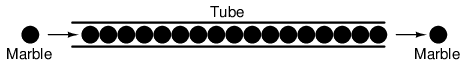
El tubo está lleno de canicas, del mismo modo que un conductor está lleno de electrones libres listos para ser movidos por una influencia externa. Si de repente se inserta una sola canica en este tubo lleno del lado izquierdo, otra canica intentará inmediatamente salir del tubo de la derecha. Aunque cada canica solo viajó una distancia corta, la transferencia de movimiento a través del tubo es prácticamente instantánea desde el extremo izquierdo al derecho, sin importar qué tan largo sea el tubo. Con la electricidad, el efecto general de un extremo de un conductor al otro ocurre a la velocidad de la luz: ¡¡¡300.000 kilómetros por segundo!!! Sin embargo, cada electrón individual viaja a través del conductor a una velocidadmuchoritmo más lento.
Si queremos que los electrones fluyan en una dirección determinada hacia un lugar determinado, debemos proporcionarles el camino adecuado para que se muevan, del mismo modo que un fontanero debe instalar tuberías para hacer que el agua fluya hacia donde quiere que fluya. Para facilitar esto,alambresEstán hechos de metales altamente conductores como cobre o aluminio en una amplia variedad de tamaños.
Recuerde que los electrones pueden fluir sólo cuando tienen la oportunidad de moverse en el espacio entre los átomos de un material. Esto significa que puede haber corriente eléctrica.solodonde existe un camino continuo de material conductor que proporciona un conducto por el que viajan los electrones. En la analogía de las canicas, las canicas pueden fluir hacia el lado izquierdo del tubo (y, en consecuencia, a través del tubo) si y sólo si el tubo está abierto en el lado derecho para que las canicas fluyan. Si el tubo está bloqueado en el lado derecho, las canicas simplemente se "apilarán" dentro del tubo y no se producirá el "flujo" de las canicas. Lo mismo se aplica a la corriente eléctrica: el flujo continuo de electrones requiere que haya un camino ininterrumpido para permitir ese flujo. Veamos un diagrama para ilustrar cómo funciona esto:
Una línea delgada y sólida (como se muestra arriba) es el símbolo convencional para un trozo de alambre continuo. Dado que el cable está hecho de un material conductor, como el cobre, sus átomos constituyentes tienen muchos electrones libres que pueden moverse fácilmente a través del cable. Sin embargo, nunca habrá un flujo continuo o uniforme de electrones dentro de este cable a menos que tengan un lugar de donde venir y un lugar a donde ir. Agreguemos una "Fuente" y un "Destino" hipotéticos de electrones:
Ahora, con la fuente de electrones empujando nuevos electrones hacia el cable del lado izquierdo, puede ocurrir un flujo de electrones a través del cable (como lo indican las flechas que apuntan de izquierda a derecha). Sin embargo, el flujo se verá interrumpido si se rompe el camino conductor formado por el hilo:
Dado que el aire es un material aislante y un espacio de aire separa los dos trozos de cable, el camino que alguna vez fue continuo ahora se ha roto y los electrones no pueden fluir de la fuente al destino. Esto es como cortar una tubería de agua en dos y tapar los extremos rotos de la tubería: el agua no puede fluir si no hay salida por la tubería. En términos eléctricos, teníamos una condición de electricidadcontinuidadcuando el cable estaba en una sola pieza, y ahora esa continuidad se rompe con el cable cortado y separado.
Si tomáramos otro trozo de cable que conduce al Destino y simplemente hiciéramos contacto físico con el cable que conduce a la Fuente, volveríamos a tener un camino continuo para que fluyan los electrones. Los dos puntos en el diagrama indican contacto físico (metal con metal) entre los trozos de alambre:
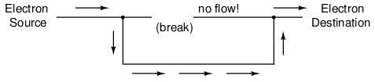
Ahora tenemos continuidad desde la Fuente hasta la conexión recién hecha, hacia abajo, hacia la derecha y hacia arriba hasta el Destino. Esto es análogo a colocar un conector en "T" en una de las tuberías tapadas y dirigir el agua a través de un nuevo segmento de tubería hasta su destino. Tenga en cuenta que el segmento de cable roto en el lado derecho no tiene electrones fluyendo a través de él, porque ya no es parte de una ruta completa desde la Fuente al Destino.
Es interesante observar que no se produce "desgaste" dentro de los cables debido a esta corriente eléctrica, a diferencia de las tuberías que transportan agua, que eventualmente se corroen y desgastan por flujos prolongados. Sin embargo, los electrones encuentran cierto grado de fricción a medida que se mueven, y esta fricción puede generar calor en un conductor. Este es un tema que exploraremos con mucho más detalle más adelante.
- REVISAR:
- In conductivomateriales, los electrones externos de cada átomo pueden ir y venir fácilmente, y se llamanelectrones libres.
- In aislanteEn los materiales, los electrones externos no tienen tanta libertad para moverse.
- Todos los metales son conductores de electricidad.
- Electricidad dinámica, ocorriente eléctrica, es el movimiento uniforme de los electrones a través de un conductor.
- Electricidad estáticaes una carga acumulada inmóvil (si está sobre un aislante) formada por un exceso o una deficiencia de electrones en un objeto. Normalmente se forma mediante separación de cargas por contacto y separación de materiales diferentes.
- Para que los electrones fluyan continuamente (indefinidamente) a través de un conductor, debe haber un camino completo e ininterrumpido para que puedan entrar y salir de ese conductor.
Electric circuits
Quizás se haya preguntado cómo los electrones pueden fluir continuamente en una dirección uniforme a través de cables sin el beneficio de estas hipotéticas fuentes y destinos de electrones. Para que el esquema de Fuente y Destino funcione, ¡ambos tendrían que tener una capacidad infinita de electrones para sostener un flujo continuo! Usando la analogía de la canica y el tubo, los recipientes de origen y destino de mármol tendrían que ser infinitamente grandes para contener suficiente capacidad de mármol para que se sostenga un "flujo" de canicas.
La respuesta a esta paradoja se encuentra en el concepto decircuito: un camino en bucle sin fin para los electrones. Si tomamos un cable, o muchos cables unidos de extremo a extremo, y lo enrollamos para que forme un camino continuo, tenemos los medios para soportar un flujo uniforme de electrones sin tener que recurrir a infinitas Fuentes y Destinos:
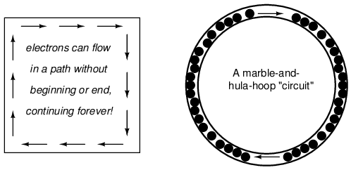
Cada electrón que avanza en el sentido de las agujas del reloj en este circuito empuja al que está frente a él, el cual empuja al que está frente a él, y así sucesivamente, como un hula-hoop lleno de canicas. Ahora tenemos la capacidad de soportar un flujo continuo de electrones indefinidamente sin la necesidad de suministros y descargas infinitos de electrones. Todo lo que necesitamos para mantener este flujo es un medio continuo de motivación para esos electrones, que abordaremos en la siguiente sección de este capítulo.
Debe tenerse en cuenta que la continuidad es tan importante en un circuito como lo es en un trozo de cable recto. Al igual que en el ejemplo con el trozo de cable recto entre la Fuente y el Destino del electrón, cualquier interrupción en este circuito impedirá que los electrones fluyan a través de él:
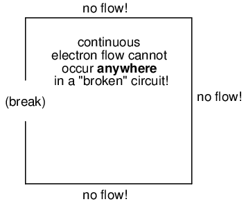
Un principio importante a tener en cuenta aquí es queno importa dónde ocurre la ruptura. Cualquier discontinuidad en el circuito impedirá el flujo de electrones por todo el circuito. A menos que haya un bucle continuo e ininterrumpido de material conductor por el que puedan fluir los electrones, simplemente no se puede mantener un flujo sostenido.
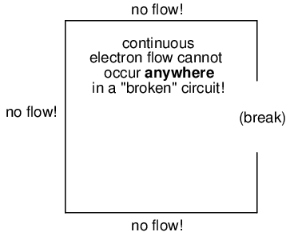
- REVISAR:
- A circuitoEs un bucle ininterrumpido de material conductor que permite que los electrones fluyan continuamente sin principio ni fin.
- Si un circuito está "roto", eso significa que sus elementos conductores ya no forman un camino completo y no puede ocurrir un flujo continuo de electrones en él.
- La ubicación de una interrupción en un circuito es irrelevante para su incapacidad de mantener un flujo continuo de electrones.Anyromper,en cualquier lugaren un circuito impide el flujo de electrones por todo el circuito.
Voltage and current
Como se mencionó anteriormente, necesitamos algo más que un camino (circuito) continuo antes de que ocurra un flujo continuo de electrones: también necesitamos algunos medios para empujar estos electrones alrededor del circuito. Al igual que las canicas en un tubo o el agua en una tubería, se necesita algún tipo de fuerza influyente para iniciar el flujo. Con los electrones, esta fuerza es la misma fuerza que actúa en la electricidad estática: la fuerza producida por un desequilibrio de carga eléctrica.
Si tomamos los ejemplos de cera y lana frotadas, encontramos que el exceso de electrones en la cera (carga negativa) y el déficit de electrones en la lana (carga positiva) crean un desequilibrio de carga entre ellos. Este desequilibrio se manifiesta como una fuerza de atracción entre los dos objetos:
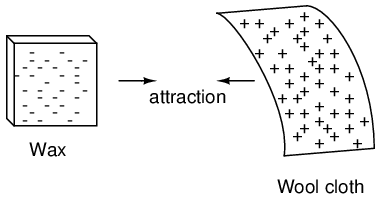
Si se coloca un cable conductor entre la cera cargada y la lana, los electrones fluirán a través de él, ya que algunos de los electrones sobrantes en la cera atraviesan el cable para regresar a la lana, llenando la deficiencia de electrones allí:
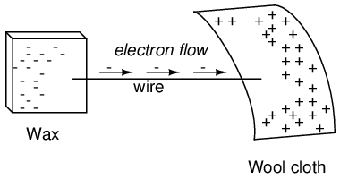
El desequilibrio de electrones entre los átomos de la cera y los átomos de la lana crea una fuerza entre los dos materiales. Sin un camino para que los electrones fluyan desde la cera a la lana, lo único que esta fuerza puede hacer es atraer los dos objetos. Sin embargo, ahora que un conductor cierra el espacio aislante, la fuerza provocará que los electrones fluyan en una dirección uniforme a través del cable, aunque sea momentáneamente, hasta que la carga en esa área se neutralice y la fuerza entre la cera y la lana disminuya.
La carga eléctrica que se forma entre estos dos materiales al frotarlos sirve para almacenar una determinada cantidad de energía. Esta energía no es diferente a la energía almacenada en un depósito alto de agua que ha sido bombeada desde un estanque de nivel inferior:
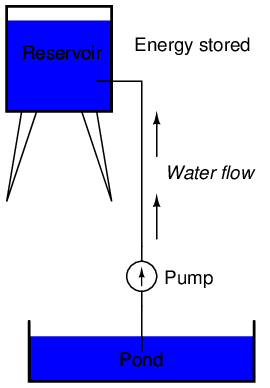
La influencia de la gravedad sobre el agua del depósito crea una fuerza que intenta mover el agua nuevamente al nivel inferior. Si se tiende una tubería adecuada desde el depósito hasta el estanque, el agua fluirá bajo la influencia de la gravedad desde el depósito, a través de la tubería:
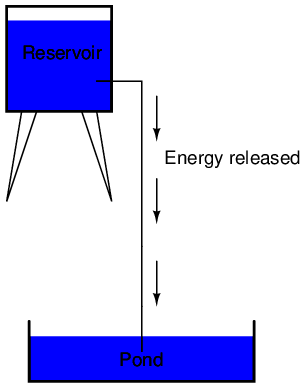
Se necesita energía para bombear esa agua desde el estanque de bajo nivel al depósito de alto nivel, y el movimiento del agua a través de las tuberías hasta su nivel original constituye una liberación de energía almacenada en el bombeo anterior.
Si el agua se bombea a un nivel aún más alto, se necesitará aún más energía para hacerlo, por lo que se almacenará más energía y se liberará más energía si se permite que el agua fluya a través de una tubería nuevamente hacia abajo:
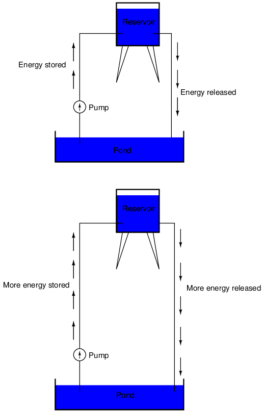
Los electrones no son muy diferentes. Si frotamos cera y lana, "bombeamos" electrones lejos de sus "niveles" normales, creando una condición en la que existe una fuerza entre la cera y la lana, mientras los electrones buscan restablecer sus posiciones anteriores (y el equilibrio dentro de sus respectivos átomos). La fuerza que atrae a los electrones a sus posiciones originales alrededor de los núcleos positivos de sus átomos es análoga a la fuerza que la gravedad ejerce sobre el agua en el depósito, tratando de llevarla a su nivel anterior.
Así como bombear agua a un nivel superior da como resultado el almacenamiento de energía, "bombear" electrones para crear un desequilibrio de carga eléctrica da como resultado que se almacene una cierta cantidad de energía en ese desequilibrio. Y, así como proporcionar una manera para que el agua fluya de regreso desde las alturas del depósito resulta en una liberación de esa energía almacenada, proporcionar una manera para que los electrones regresen a sus "niveles" originales resulta en una liberación de energía almacenada.
Cuando los electrones están en esa condición estática (como el agua quieta en lo alto de un depósito), la energía almacenada allí se llamaenergía potencial, porque tiene la posibilidad (potencial) de liberación que aún no se ha realizado plenamente. Cuando raspas tus zapatos con suela de goma contra una alfombra de tela en un día seco, creas un desequilibrio de carga eléctrica entre tú y la alfombra. La acción de raspar los pies almacena energía en forma de un desequilibrio de electrones expulsados de sus ubicaciones originales. Esta carga (electricidad estática) es estacionaria y no te darás cuenta de que se está almacenando energía. Sin embargo, una vez que coloques tu mano contra el pomo de una puerta de metal (con mucha movilidad de electrones para neutralizar tu carga eléctrica), esa energía almacenada se liberará en forma de un flujo repentino de electrones a través de tu mano, ¡y lo percibirás como una descarga eléctrica!
Esta energía potencial, almacenada en forma de desequilibrio de carga eléctrica y capaz de provocar que los electrones fluyan a través de un conductor, se puede expresar como un término llamadoVoltaje, que técnicamente es una medida de energía potencial por unidad de carga de electrones, o algo que un físico llamaríaenergía potencial específica. Definido en el contexto de la electricidad estática, el voltaje es la medida de trabajo requerido para mover una unidad de carga de un lugar a otro, contra la fuerza que intenta mantener las cargas eléctricas en equilibrio. En el contexto de las fuentes de energía eléctrica, el voltaje es la cantidad de energía potencial disponible (trabajo a realizar) por unidad de carga, para mover electrones a través de un conductor.
Debido a que el voltaje es una expresión de energía potencial, que representa la posibilidad o el potencial de liberación de energía cuando los electrones se mueven de un "nivel" a otro, siempre se hace referencia entre dos puntos. Considere la analogía del depósito de agua:
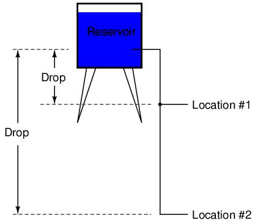
Debido a la diferencia en la altura de la caída, existe la posibilidad de que se libere mucha más energía desde el depósito a través de la tubería hasta la ubicación 2 que hacia la ubicación 1. El principio se puede entender intuitivamente al dejar caer una piedra: ¿qué resulta en un impacto más violento, una piedra caída desde una altura de un pie, o la misma roca caída desde una altura de una milla? Evidentemente, la caída de mayor altura produce una mayor liberación de energía (un impacto más violento). No podemos evaluar la cantidad de energía almacenada en un depósito de agua simplemente midiendo el volumen de agua, como tampoco podemos predecir la gravedad del impacto de una roca que cae simplemente conociendo el peso de la roca: en ambos casos también debemos considerar cómofarestas masas caerán desde su altura inicial. La cantidad de energía liberada al permitir que una masa caiga es relativa a la distanciaentresus puntos de inicio y fin. Asimismo, la energía potencial disponible para mover electrones de un punto a otro es relativa a esos dos puntos. Por lo tanto, el voltaje siempre se expresa como una cantidadentredos puntos. Curiosamente, la analogía de una masa que potencialmente "cae" de una altura a otra es un modelo tan adecuado que el voltaje entre dos puntos a veces se denominacaída de voltaje.
El voltaje se puede generar por medios distintos al frotamiento de ciertos tipos de materiales entre sí. Las reacciones químicas, la energía radiante y la influencia del magnetismo en los conductores son algunas de las formas en que se puede producir voltaje. Ejemplos respectivos de estas tres fuentes de voltaje son las baterías, las células solares y los generadores (como la unidad "alternador" debajo del capó de su automóvil). Por ahora, no entraremos en detalles sobre cómo funciona cada una de estas fuentes de voltaje; lo más importante es que comprendamos cómo se pueden aplicar las fuentes de voltaje para crear un flujo de electrones en un circuito.
Tomemos el símbolo de una batería química y construyamos un circuito paso a paso:
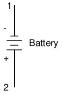
Cualquier fuente de voltaje, incluidas las baterías, tiene dos puntos de contacto eléctrico. En este caso, tenemos el punto 1 y el punto 2 en el diagrama anterior. Las líneas horizontales de longitud variable indican que se trata de una batería y, además, indican la dirección en la que el voltaje de esta batería intentará empujar los electrones a través de un circuito. El hecho de que las líneas horizontales en el símbolo de la batería parezcan separadas (y por lo tanto incapaces de servir como camino para que los electrones se muevan) no es motivo de preocupación: en la vida real, esas líneas horizontales representan placas metálicas sumergidas en un material líquido o semisólido que no solo conduce electrones, sino que también genera el voltaje para empujarlos al interactuar con las placas.
Observe los pequeños signos "+" y "-" inmediatamente a la izquierda del símbolo de la batería. El extremo negativo (-) de la batería es siempre el extremo con el guión más corto y el extremo positivo (+) de la batería es siempre el extremo con el guión más largo. Como hemos decidido llamar a los electrones cargados "negativamente" (¡gracias, Ben!), el extremo negativo de una batería es el extremo que intenta expulsar los electrones de ella. Asimismo, el extremo positivo es aquel extremo que intenta atraer electrones.
Con los extremos "+" y "-" de la batería no conectados a nada, habrá voltaje entre esos dos puntos, pero no habrá flujo de electrones a través de la batería, porque no hay un camino continuo para que los electrones se muevan.
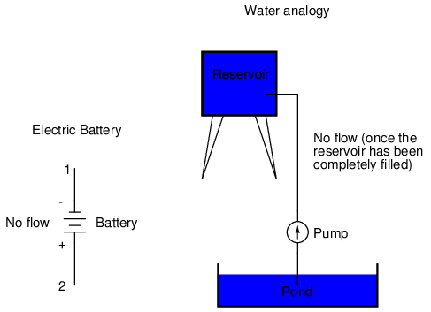
El mismo principio se aplica a la analogía del depósito de agua y la bomba: sin una tubería de retorno al estanque, la energía almacenada en el depósito no puede liberarse en forma de flujo de agua. Una vez que el depósito está completamente lleno, no puede haber flujo, sin importar cuánta presión pueda generar la bomba. Es necesario que haya un camino (circuito) completo para que el agua fluya desde el estanque hasta el depósito y de regreso al estanque para que se produzca un flujo continuo.
Podemos proporcionar ese camino para la batería conectando un trozo de cable de un extremo de la batería al otro. Formando un circuito con un bucle de alambre, iniciaremos un flujo continuo de electrones en el sentido de las agujas del reloj:
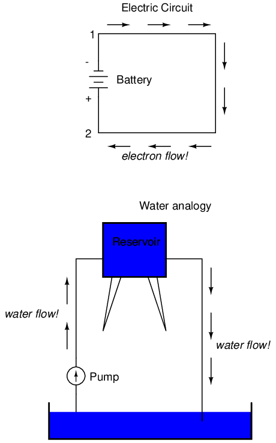
Mientras la batería siga produciendo voltaje y la continuidad del camino eléctrico no se rompa, los electrones seguirán fluyendo en el circuito. Siguiendo la metáfora del agua que se mueve a través de una tubería, este flujo continuo y uniforme de electrones a través del circuito se llamaactual. Mientras la fuente de voltaje siga "empujando" en la misma dirección, el flujo de electrones seguirá moviéndose en la misma dirección en el circuito. Este flujo de electrones en una sola dirección se llamaCorriente continuao CC. En el segundo volumen de esta serie de libros, se exploran circuitos eléctricos donde la dirección de la corriente cambia hacia adelante y hacia atrás:Corriente alterna, o aire acondicionado. Pero por ahora, sólo nos ocuparemos de los circuitos de CC.
Debido a que la corriente eléctrica se compone de electrones individuales que fluyen al unísono a través de un conductor moviéndose y empujando a los electrones que están delante, al igual que las canicas a través de un tubo o el agua a través de una tubería, la cantidad de flujo a lo largo de un solo circuito será la misma en cualquier punto. Si tuviéramos que monitorear una sección transversal del cable en un solo circuito, contando los electrones que fluyen, notaríamos exactamente la misma cantidad por unidad de tiempo que en cualquier otra parte del circuito, independientemente de la longitud o el diámetro del conductor.
Si rompemos la continuidad del circuitoen cualquier punto, la corriente eléctrica cesará en todo el circuito, y el voltaje total producido por la batería se manifestará a través de la rotura, entre los extremos del cable que solían estar conectados:
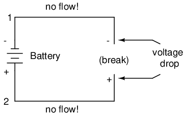
Observe los signos "+" y "-" dibujados en los extremos de la interrupción del circuito y cómo se corresponden con los signos "+" y "-" junto a los terminales de la batería. Estos marcadores indican la dirección en la que el voltaje intenta impulsar el flujo de electrones, esa dirección potencial comúnmente conocida comopolaridad. Recuerde que el voltaje siempre es relativo entre dos puntos. Debido a este hecho, la polaridad de una caída de voltaje también es relativa entre dos puntos: si un punto en un circuito se etiqueta con un "+" o un "-" depende del otro punto al que está referenciado. Eche un vistazo al siguiente circuito, donde cada esquina del bucle está marcada con un número como referencia:
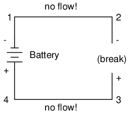
Con la continuidad del circuito rota entre los puntos 2 y 3, la polaridad del voltaje caído entre los puntos 2 y 3 es "-" para el punto 2 y "+" para el punto 3. La polaridad de la batería (1 "-" y 4 "+") intenta empujar los electrones a través del circuito en el sentido de las agujas del reloj de 1 a 2 a 3 a 4 y de regreso a 1 nuevamente.
Ahora veamos qué sucede si volvemos a conectar los puntos 2 y 3, pero colocamos una interrupción en el circuito entre los puntos 3 y 4:
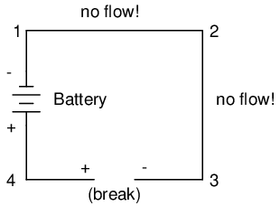
Con la ruptura entre 3 y 4, la polaridad de la caída de voltaje entre esos dos puntos es "+" para 4 y "-" para 3. Tome nota especial del hecho de que el "signo" del punto 3 es opuesto al del primer ejemplo, donde la ruptura fue entre los puntos 2 y 3 (donde el punto 3 estaba etiquetado como "+"). Es imposible para nosotros decir que el punto 3 en este circuito siempre será "+" o "-", porque la polaridad, como el voltaje en sí, no es específica de un solo punto, sino que siempre es relativa entre dos puntos.
- REVISAR:
- Se puede motivar a los electrones a fluir a través de un conductor mediante la misma fuerza que se manifiesta en la electricidad estática.
- Voltajees la medida de energía potencial específica (energía potencial por unidad de carga) entre dos ubicaciones. En términos sencillos, es la medida de "empuje" disponible para motivar a los electrones.
- El voltaje, como expresión de la energía potencial, siempre es relativo entre dos ubicaciones o puntos. A veces se le llama "caída" de voltaje.
- Cuando se conecta una fuente de voltaje a un circuito, el voltaje causará un flujo uniforme de electrones a través de ese circuito llamadoactual.
- En un circuito único (un bucle), la cantidad de corriente en cualquier punto es la misma que la cantidad de corriente en cualquier otro punto.
- Si se interrumpe un circuito que contiene una fuente de voltaje, el voltaje total de esa fuente aparecerá en los puntos de interrupción.
- La orientación +/- de una caída de voltaje se llamapolaridad. También es relativo entre dos puntos.
Resistance
El circuito del apartado anterior no es muy práctico. De hecho, puede ser bastante peligroso construirlo (conectar directamente los polos de una fuente de voltaje con un solo trozo de cable). La razón por la que es peligroso es porque la magnitud de la corriente eléctrica puede ser muy grande en tal situación.cortocircuito, y la liberación de energía es muy espectacular (normalmente en forma de calor). Por lo general, los circuitos eléctricos se construyen de tal manera que hagan un uso práctico de esa energía liberada, de la manera más segura posible.
Un uso práctico y popular de la corriente eléctrica es el funcionamiento de la iluminación eléctrica. La forma más simple de lámpara eléctrica es un pequeño "filamento" de metal dentro de una bombilla de vidrio transparente, que brilla al rojo vivo ("incandesce") con energía térmica cuando pasa suficiente corriente eléctrica a través de él. Al igual que la batería, tiene dos puntos de conexión conductivos, uno para la entrada de electrones y otro para la salida de los electrones.
Conectado a una fuente de voltaje, el circuito de una lámpara eléctrica se parece a esto:
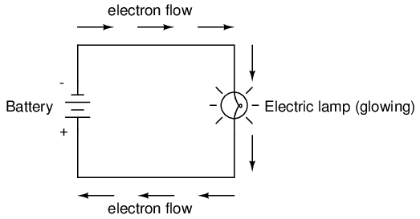
A medida que los electrones se abren camino a través del fino filamento metálico de la lámpara, encuentran más oposición al movimiento de la que normalmente encontrarían en un trozo de alambre grueso. Esta oposición a la corriente eléctrica depende del tipo de material, su área de sección transversal y su temperatura. Se conoce técnicamente comoresistencia. (Se puede decir que los conductores tienen baja resistencia y los aisladores tienen una resistencia muy alta). Esta resistencia sirve para limitar la cantidad de corriente a través del circuito con una determinada cantidad de voltaje suministrado por la batería, en comparación con el "cortocircuito" donde no teníamos nada más que un cable que une un extremo de la fuente de voltaje (batería) al otro.
Cuando los electrones se mueven contra la oposición de la resistencia, se genera "fricción". Al igual que la fricción mecánica, la fricción producida por los electrones que fluyen contra una resistencia se manifiesta en forma de calor. La resistencia concentrada del filamento de una lámpara da como resultado una cantidad relativamente grande de energía térmica disipada en ese filamento. Esta energía térmica es suficiente para hacer que el filamento brille al rojo vivo, produciendo luz, mientras que los cables que conectan la lámpara a la batería (que tienen una resistencia mucho menor) apenas se calientan mientras conducen la misma cantidad de corriente.
Como en el caso del cortocircuito, si se rompe la continuidad del circuito en algún punto, el flujo de electrones se detiene en todo el circuito. Con una lámpara colocada, esto significa que dejará de brillar:
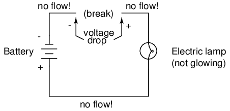
Como antes, sin flujo de electrones, todo el potencial (voltaje) de la batería está disponible a través de la ruptura, esperando la oportunidad de una conexión para cruzar esa ruptura y permitir el flujo de electrones nuevamente. Esta condición se conoce comocircuito abierto, donde una interrupción en la continuidad del circuito impide que pase corriente. Todo lo que se necesita es una única interrupción en la continuidad para "abrir" un circuito. Una vez que se han vuelto a conectar los cortes y se ha restablecido la continuidad del circuito, se conoce comocircuito cerrado.
Lo que vemos aquí es la base para encender y apagar lámparas mediante interruptores remotos. Debido a que cualquier interrupción en la continuidad de un circuito provoca que la corriente se detenga en todo el circuito, podemos usar un dispositivo diseñado para interrumpir intencionalmente esa continuidad (llamadocambiar), montado en cualquier lugar conveniente al que podamos pasar cables, para controlar el flujo de electrones en el circuito:
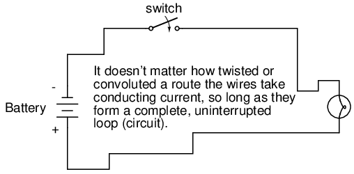
Así es como un interruptor montado en la pared de una casa puede controlar una lámpara montada en un largo pasillo, o incluso en otra habitación, lejos del interruptor. El interruptor en sí está construido con un par de contactos conductores (generalmente hechos de algún tipo de metal) unidos por un actuador de palanca mecánico o un botón pulsador. Cuando los contactos se tocan, los electrones pueden fluir de uno a otro y se establece la continuidad del circuito; cuando los contactos se separan, el aislamiento del aire entre ellos impide el flujo de electrones de uno a otro y se rompe la continuidad del circuito.
Quizás el mejor tipo de interruptor para ilustrar el principio básico es el interruptor de "cuchillo":
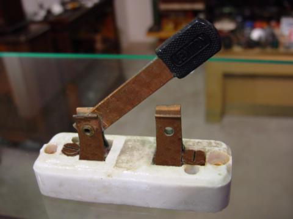
Un interruptor de cuchilla no es más que una palanca conductora, libre de girar sobre una bisagra, que entra en contacto físico con uno o más puntos de contacto estacionarios que también son conductores. El interruptor que se muestra en la ilustración anterior está construido sobre una base de porcelana (un excelente material aislante), utilizando cobre (un excelente conductor) para la "hoja" y los puntos de contacto. La manija es de plástico para aislar la mano del operador de la hoja conductora del interruptor al abrirlo o cerrarlo.
Aquí hay otro tipo de interruptor de cuchilla, con dos contactos estacionarios en lugar de uno:
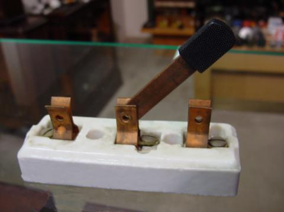
El interruptor de cuchilla particular que se muestra aquí tiene una "hoja" pero dos contactos estacionarios, lo que significa que puede abrir o cerrar más de un circuito. Por ahora no es muy importante tener esto en cuenta, sólo el concepto básico de qué es un interruptor y cómo funciona.
Los interruptores de cuchilla son excelentes para ilustrar el principio básico de cómo funciona un interruptor, pero presentan distintos problemas de seguridad cuando se usan en circuitos eléctricos de alta potencia. Los conductores expuestos en un interruptor de cuchilla hacen que el contacto accidental con el circuito sea una clara posibilidad, y cualquier chispa que pueda ocurrir entre la cuchilla en movimiento y el contacto estacionario puede encender cualquier material inflamable cercano. La mayoría de los diseños de interruptores modernos tienen sus conductores móviles y puntos de contacto sellados dentro de una caja aislante para mitigar estos peligros. Una fotografía de algunos tipos de interruptores modernos muestra cómo los mecanismos de conmutación están mucho más ocultos que en el diseño de cuchilla:
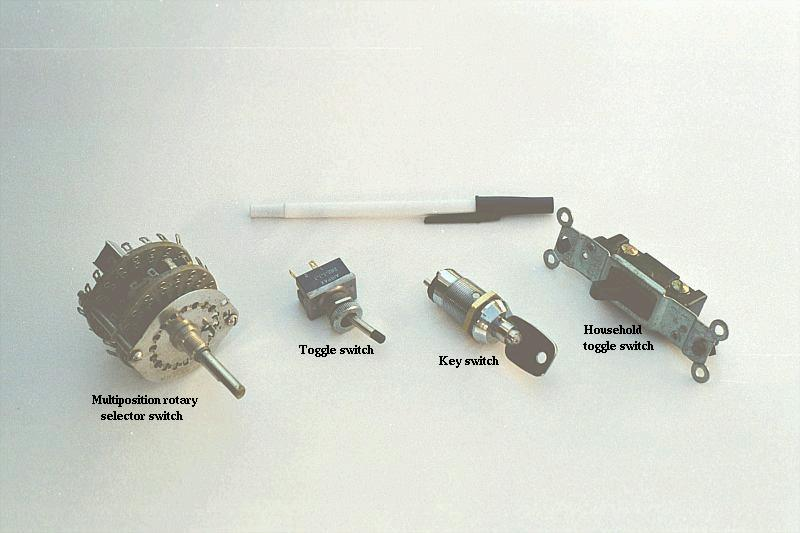
De acuerdo con la terminología "abierta" y "cerrada" de los circuitos, un interruptor que hace contacto de un terminal de conexión al otro (ejemplo: un interruptor de cuchilla con la hoja tocando completamente el punto de contacto estacionario) proporciona continuidad para que los electrones fluyan a través de él, y se llamacerradocambiar. Por el contrario, un interruptor que interrumpe la continuidad (ejemplo: un interruptor de cuchilla con la hojanottocar el punto de contacto estacionario) no permitirá que los electrones pasen a través y se llamaabiertocambiar. Esta terminología suele resultar confusa para el nuevo estudiante de electrónica, porque las palabras "abierto" y "cerrado" se entienden comúnmente en el contexto de una puerta, donde "abierto" se equipara con paso libre y "cerrado" con bloqueo. En el caso de los interruptores eléctricos, estos términos tienen significados opuestos: "abierto" significa que no hay flujo, mientras que "cerrado" significa libre paso de electrones.
- REVISAR:
- Resistenciaes la medida de oposición a la corriente eléctrica.
- A cortocircuitoEs un circuito eléctrico que ofrece poca o ninguna resistencia al flujo de electrones. Los cortocircuitos son peligrosos con fuentes de energía de alto voltaje porque las altas corrientes encontradas pueden provocar la liberación de grandes cantidades de energía térmica.
- An circuito abiertoEs aquel en el que la continuidad se ha roto por una interrupción en el camino para que fluyan los electrones.
- A circuito cerradoEs uno que está completo, con buena continuidad en todo momento.
- Un dispositivo diseñado para abrir o cerrar un circuito bajo condiciones controladas se llamacambiar.
- los términos"abierto" and "cerrado"se refieren a interruptores y circuitos completos. Un interruptor abierto es aquel que no tiene continuidad: los electrones no pueden fluir a través de él. Un interruptor cerrado es aquel que proporciona un camino directo (baja resistencia) para que fluyan los electrones.
Voltage and current in a practical circuit
Debido a que se necesita energía para forzar a los electrones a fluir contra la oposición de una resistencia, se manifestará (o "caerá") un voltaje entre cualquier punto de un circuito con resistencia entre ellos. Es importante señalar que aunque la cantidad de corriente (la cantidad de electrones que pasan por un punto determinado cada segundo) es uniforme en un circuito simple, la cantidad de voltaje (energía potencial por unidad de carga) entre diferentes conjuntos de puntos en un solo circuito puede variar considerablemente:
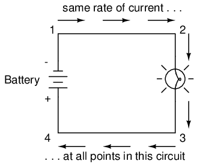
Tome este circuito como ejemplo. Si etiquetamos cuatro puntos de este circuito con los números 1, 2, 3 y 4, encontraremos que la cantidad de corriente conducida a través del cable entre los puntos 1 y 2 es exactamente la misma que la cantidad de corriente conducida a través de la lámpara (entre los puntos 2 y 3). Esta misma cantidad de corriente pasa por el cable entre los puntos 3 y 4, y por la batería (entre los puntos 1 y 4).
Sin embargo, encontraremos que el voltaje que aparece entre dos de estos puntos es directamente proporcional a la resistencia dentro del camino conductor entre esos dos puntos, dado que la cantidad de corriente a lo largo de cualquier parte del camino del circuito es la misma (lo cual, para este circuito simple, es). En un circuito de lámpara normal, la resistencia de una lámpara será mucho mayor que la resistencia de los cables de conexión, por lo que deberíamos esperar ver una cantidad sustancial de voltaje entre los puntos 2 y 3, con muy poco entre los puntos 1 y 2, o entre 3 y 4. El voltaje entre los puntos 1 y 4, por supuesto, será la cantidad total de "fuerza" ofrecida por la batería, que será sólo ligeramente mayor que el voltaje a través de la lámpara (entre los puntos 2 y 3).
Esto, nuevamente, es análogo al sistema de depósito de agua:
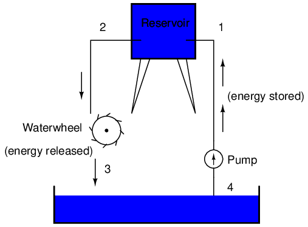
Entre los puntos 2 y 3, donde el agua que cae libera energía en la rueda hidráulica, hay una diferencia de presión entre los dos puntos, lo que refleja la oposición al flujo de agua a través de la rueda hidráulica. Del punto 1 al punto 2, o del punto 3 al punto 4, donde el agua fluye libremente a través de embalses con poca oposición, hay poca o ninguna diferencia de presión (no hay energía potencial). Sin embargo, la tasa de flujo de agua en este sistema continuo es la misma en todas partes (suponiendo que los niveles de agua tanto en el estanque como en el depósito no cambian): a través de la bomba, a través de la rueda hidráulica y a través de todas las tuberías. Lo mismo ocurre con los circuitos eléctricos simples: la velocidad del flujo de electrones es la misma en todos los puntos del circuito, aunque los voltajes pueden diferir entre diferentes conjuntos de puntos.
Conventional versus electron flow
"Lo bueno de los estándares es que hay muchísimos para elegir".
Andrew S. Tanenbaum, profesor de informática
Cuando Benjamín Franklin hizo su conjetura sobre la dirección del flujo de carga (de la cera suave a la lana rugosa), sentó un precedente para la notación eléctrica que existe hasta el día de hoy, a pesar de que sabemos que los electrones son las unidades constituyentes de la carga, y que se desplazan de la lana a la cera (no de la cera a la lana) cuando esas dos sustancias se frotan entre sí. Por eso se dice que los electrones tienen unanegativocarga: porque Franklin asumió que la carga eléctrica se movía en la dirección opuesta a la que realmente lo hace, por lo que los objetos que llamó "negativos" (que representan una deficiencia de carga) en realidad tienen un excedente de electrones.
Cuando se descubrió la verdadera dirección del flujo de electrones, la nomenclatura de "positivo" y "negativo" ya estaba tan bien establecida en la comunidad científica que no se hizo ningún esfuerzo por cambiarla, aunque llamar a los electrones "positivos" tendría más sentido en referencia a un "exceso" de carga. Verá, los términos "positivo" y "negativo" son invenciones humanas y, como tales, no tienen un significado absoluto más allá de nuestras propias convenciones de lenguaje y descripción científica. Franklin podría haberse referido con la misma facilidad a un exceso de carga como "negro" y a una deficiencia como "blanca", en cuyo caso los científicos hablarían de electrones que tienen una carga "blanca" (asumiendo la misma conjetura incorrecta sobre la posición de la carga entre la cera y la lana).
Sin embargo, como tendemos a asociar la palabra "positivo" con "excedente" y "negativo" con "deficiencia", la etiqueta estándar para la carga de los electrones parece al revés. Debido a esto, muchos ingenieros decidieron conservar el antiguo concepto de electricidad con "positivo" refiriéndose a un exceso de carga, y etiquetar el flujo de carga (corriente) en consecuencia. Esto se conoció comoflujo convencionalnotación:
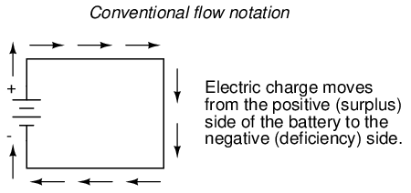
Otros optaron por designar el flujo de carga según el movimiento real de los electrones en un circuito. Esta forma de simbología se conoció comoflujo de electronesnotación:
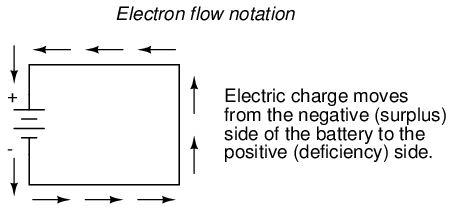
En notación de flujo convencional, mostramos el movimiento de la carga de acuerdo con las etiquetas (técnicamente incorrectas) de + y -. De esta manera las etiquetas tienen sentido, pero la dirección del flujo de carga es incorrecta. En la notación de flujo de electrones, seguimos el movimiento real de los electrones en el circuito, pero las etiquetas + y - parecen al revés. ¿Realmente importa cómo designamos el flujo de carga en un circuito? En realidad no, siempre y cuando seamos consistentes en el uso de nuestros símbolos. Puede seguir una dirección imaginada de la corriente (flujo convencional) o la real (flujo de electrones) con igual éxito en lo que respecta al análisis de circuitos. Los conceptos de voltaje, corriente, resistencia, continuidad e incluso tratamientos matemáticos como la ley de Ohm (capítulo 2) y las leyes de Kirchhoff (capítulo 6) siguen siendo igualmente válidos con cualquier estilo de notación.
Encontrará notación de flujo convencional seguida por la mayoría de los ingenieros eléctricos e ilustrada en la mayoría de los libros de texto de ingeniería. El flujo de electrones se ve con mayor frecuencia en los libros de texto introductorios (incluido éste) y en los escritos de científicos profesionales, especialmente físicos del estado sólido que se ocupan del movimiento real de los electrones en sustancias. Estas preferencias son culturales, en el sentido de que ciertos grupos de personas han encontrado ventajoso imaginar el movimiento de la corriente eléctrica de determinadas maneras. Dado que la mayoría de los análisis de circuitos eléctricos no dependen de una representación técnicamente precisa del flujo de carga, la elección entre notación de flujo convencional y notación de flujo de electrones es arbitraria. . . casi.
Muchos dispositivos eléctricos toleran corrientes reales en cualquier dirección sin diferencia en su funcionamiento. Las lámparas incandescentes (del tipo que utiliza un filamento metálico delgado que brilla al rojo vivo con suficiente corriente), por ejemplo, producen luz con la misma eficiencia independientemente de la dirección de la corriente. Incluso funcionan bien con corriente alterna (CA), donde la dirección cambia rápidamente con el tiempo. Los conductores e interruptores también funcionan independientemente de la dirección de la corriente. El término técnico para esta irrelevancia del flujo de carga esno polarización. Podríamos decir entonces, que las lámparas incandescentes, los interruptores y los cables sonno polarizadocomponentes. Por el contrario, cualquier dispositivo que funcione de manera diferente con corrientes de diferente dirección se llamaríapolarizadodispositivo.
Hay muchos dispositivos polarizados de este tipo que se utilizan en circuitos eléctricos. La mayoría de ellos están hechos de los llamadossemiconductorsustancias y, como tales, no se examinan en detalle hasta el tercer volumen de esta serie de libros. Al igual que los interruptores, las lámparas y las baterías, cada uno de estos dispositivos está representado en un diagrama esquemático mediante un símbolo único. Como se podría suponer, los símbolos de dispositivos polarizados suelen contener una flecha en su interior, en algún lugar, para designar una dirección preferida o exclusiva de la corriente. Aquí es donde realmente importan las notaciones en competencia entre el flujo convencional y el de electrones. Debido a que los ingenieros de hace mucho tiempo se han decidido por el flujo convencional como notación estándar de su "cultura", y debido a que los ingenieros son las mismas personas que inventan los dispositivos eléctricos y los símbolos que los representan, las flechas utilizadas en los símbolos de estos dispositivosTodos apuntan en la dirección del flujo convencional, no en el flujo de electrones.. Es decir, todos los símbolos de estos dispositivos tienen marcas de flechas que apuntancontrael flujo real de electrones a través de ellos.
Quizás el mejor ejemplo de un dispositivo polarizado sea eldiodo. Un diodo es una "válvula" unidireccional para corriente eléctrica, análoga a unacontrolador de el volumenpara aquellos familiarizados con plomería y sistemas hidráulicos. Idealmente, un diodo proporciona un flujo sin obstáculos para la corriente en una dirección (poca o ninguna resistencia), pero evita el flujo en la otra dirección (resistencia infinita). Su símbolo esquemático se ve así:
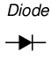
Situado dentro de un circuito de batería/lámpara, su funcionamiento es el siguiente:
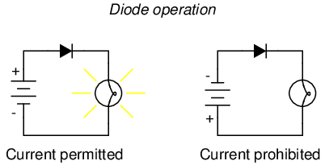
Cuando el diodo mira en la dirección adecuada para permitir la corriente, la lámpara se enciende. De lo contrario, el diodo bloquea todo el flujo de electrones como si se interrumpiera el circuito y la lámpara no brillará.
Si etiquetamos la corriente del circuito usando notación de flujo convencional, el símbolo de flecha del diodo tiene mucho sentido: la punta de flecha triangular apunta en la dirección del flujo de carga, de positivo a negativo:
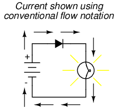
Por otro lado, si utilizamos la notación de flujo de electrones para mostrar laverdaderodirección del viaje del electrón alrededor del circuito, la simbología de la flecha del diodo parece al revés:
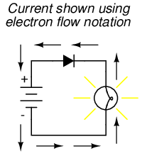
Sólo por esta razón, muchas personas optan por hacer del flujo convencional su notación preferida al dibujar la dirección del movimiento de la carga en un circuito. Aunque no sea por otra razón, los símbolos asociados con componentes semiconductores como los diodos tienen más sentido de esta manera. Sin embargo, otros optan por mostrar la verdadera dirección del viaje de los electrones para evitar tener que decirse a sí mismos: "sólo recuerden que los electrones sonde hechomoviéndose en la otra dirección" siempre que la verdadera dirección del movimiento de los electrones se convierta en un problema.
En esta serie de libros de texto, me he comprometido a utilizar la notación de flujo de electrones. Irónicamente, esta no fue mi primera opción. Cuando estaba aprendiendo electrónica por primera vez, me resultó mucho más fácil usar la notación de flujo convencional, principalmente debido a las direcciones de las flechas de los símbolos de los dispositivos semiconductores. Más tarde, cuando comencé mi primera formación formal en electrónica, mi instructor insistió en utilizar la notación de flujo de electrones en sus conferencias. De hecho, nos pidió que tomáramos nuestros libros de texto (que estaban ilustrados usando notación de flujo convencional) y usáramos nuestros bolígrafos para cambiar las direcciones de todas las flechas actuales para señalar la dirección "correcta". Sin embargo, su preferencia no fue arbitraria. En sus 20 años de carrera como técnico en electrónica de la Marina de los EE. UU., trabajó en muchos equipos de tubos de vacío. Antes de la llegada de los componentes semiconductores como los transistores, los dispositivos conocidos comotubos de vacío or tubos de electronesSe utilizaron para amplificar pequeñas señales eléctricas. Estos dispositivos funcionan con el fenómeno de los electrones que se precipitan a través del vacío, con su velocidad de flujo controlada por voltajes aplicados entre placas metálicas y rejillas colocadas en su camino, y se comprenden mejor cuando se visualizan utilizando la notación de flujo de electrones.
Cuando me gradué de ese programa de capacitación, volví a mi antiguo hábito de notación de flujo convencional, principalmente para minimizar la confusión con los símbolos de los componentes, ya que los tubos de vacío están casi obsoletos excepto en aplicaciones especiales. Al recopilar notas para la redacción de este libro, tenía plena intención de ilustrarlo utilizando un flujo convencional.
Años más tarde, cuando me convertí en profesor de electrónica, el plan de estudios del programa que iba a impartir ya se había establecido en torno a la notación del flujo de electrones. Por extraño que parezca, esto se debió en parte al legado de mi primer instructor de electrónica (el veterano de 20 años de la Marina), ¡pero esa es otra historia completamente diferente! No queriendo confundir a los estudiantes al enseñar "diferente" a los otros instructores, tuve que superar mi hábito y acostumbrarme a visualizar el flujo de electrones en lugar de lo convencional. Como quería que mi libro fuera un recurso útil para mis alumnos, cambié de planes a regañadientes y lo ilustré con todas las flechas apuntando en la dirección "correcta". ¡Oh, bueno, a veces simplemente no puedes ganar!
Como nota positiva (sin juego de palabras), descubrí posteriormente que algunos estudiantes prefieren la notación del flujo de electrones cuando aprenden por primera vez sobre el comportamiento de sustancias semiconductoras. Además, el hábito de visualizar electrones fluyendo.contraLas flechas de los símbolos de dispositivos polarizados no son tan difíciles de aprender y, al final, descubrí que puedo seguir el funcionamiento de un circuito igualmente bien usando cualquier modo de notación. Aún así, a veces me pregunto si todo sería mucho más fácil si volviéramos a la fuente de la confusión (la conjetura errónea de Ben Franklin) y solucionáramos el problema allí, llamando a los electrones "positivos" y a los protones "negativos".
Contributors
Los contribuyentes a este capítulo se enumeran en orden cronológico de sus contribuciones, desde el más reciente hasta el primero. Consulte el Apéndice 2 (Lista de colaboradores) para fechas e información de contacto.
Bill Heath(Septiembre de 2002): Señaló un error en la ilustración del átomo de carbono: el núcleo se mostró con siete protones en lugar de seis.
Ben Crowell, Ph.D.(13 de enero de 2001): sugerencias para mejorar la precisión técnica deVoltaje and cargardefiniciones.
Jason Stark(Junio de 2000): Formato de documentos HTML, que dio lugar a una segunda edición mucho más atractiva.
Lecciones en circuitos eléctricoscopyright (C) 2000-2023 Tony R. Kuphaldt, según los términos y condiciones delCC BY License.